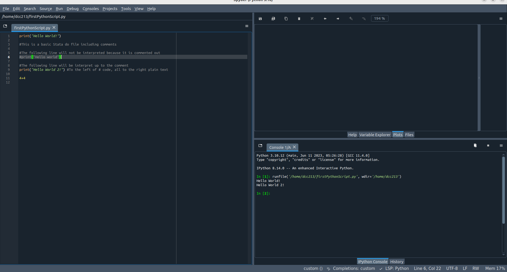
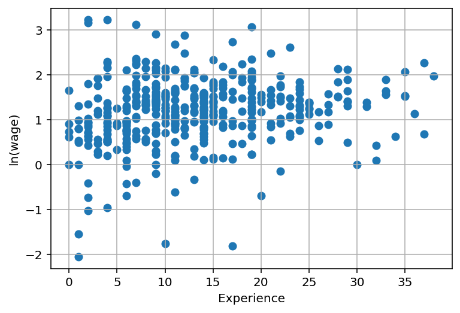
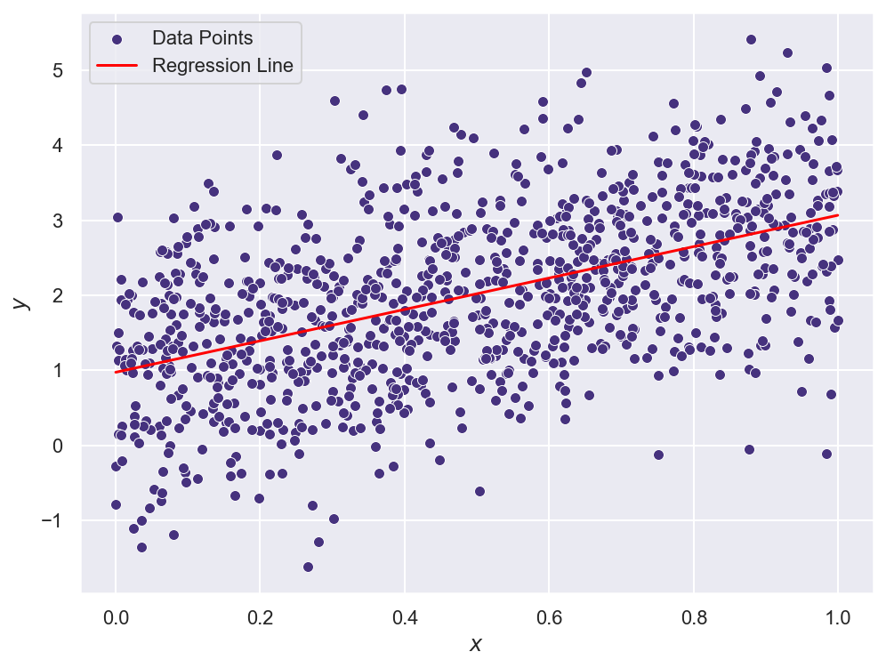
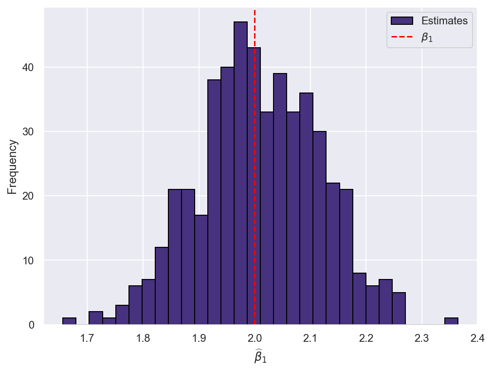

4 + 48We will assume that when you are reading this you have downloaded Python and have been able to access Python in some way. This may be via the command line, but most likely we imagine you will have some type of IDE which allows you to see a number of windows including a space for graphical output, a description of the contents of your Python Environment (for example any data you have loaded), potentially a place to write your code in Python, and, most importantly, a “shell”, or Python interface, which looks like the following:
Python 3.8.10 (default, May 26 2023, 14:05:08)
[GCC 9.4.0] on linux
Type "help", "copyright", "credits" or "license" for more information.
>>>It may be prefereble to install ipython (details here) which provides a slightly more interactive version of Python. This is available by default in certain IDEs such as Spyder. The value of working in an ipython shell over a standard python shell is the availability of a number of “magic commands” such as simple ways to get help, run files, and so forth. We will delve into this slightly more below, but under the hood, both Python and IPython work with the Python language, and have a very similar feel; for example, see below for an example of the IPython shell compared to Python above.
Python 3.10.12 (main, Jun 11 2023, 05:26:28) [GCC 11.4.0]
Type 'copyright', 'credits' or 'license' for more information
IPython 8.14.0 -- An enhanced Interactive Python. Type '?' for help.
In [1]:Here, Python code can be entered directly following a prompt which is the >>> symbol at the bottom of the python window above, or In [1]: in the case of IPython. From the moment you open Python you are in a Python session until the moment you close it, and from now on we will understand a session as this time between when we open and close Python. The most simple way to execute code in Python is to simply input commands into your Python prompt. So, for example, you could write the following at to the right of the >>> symbol, and Python will evaluate this code:
As you can see, Python has understood the instruction that you want to add 4 plus 4 and show the result, which is evaluated, and output directly below the code in the Python prompt. Later in this chapter we will properly explain these mathematical operations and the different Python data types. Beyond evaluating such simple mathematical operations, Python has a host of in-built functions which can be invoked at the command line. While we will interact with this in more detail later, a simple example is the following, which you can type in your Python console:
This function simply sums the list of values provided within it, printing the output (10) below. We will return to discuss functions in more detail a bit later on.
For now you will note that we have simply been typing instructions to Python directly into the command prompt, and Python has been providing us with output. Generally, we will not work this way in an empirical research project, as we will want to develop code over time, and be able to return to Python and replicate code in the future. For this reason, generally we will work in Python scripts, or files named as something.py (where something will be logical name for the file). We will use these scripts to store the commands which we require for particular processes or routines, and can then save them to the disk of our computer before running them in Python. These scripts can be generated in any type of text editor, and then can be run in Python. If you are using IPython, running a script can be done simply using the %run command, by typing %run something.py. This is however a magic command, and so is available in IPython, but not in Python. Similarly, in certain other IDEs there may be other environment-specific ways to run .py files, for example the runfile command which is used in Spyder below:

You may notice something strange about the code and the output in the Python console in the image above. The Python script has 7 distinct lines of text, but the console only produces two lines of output. The reason for this is because we have included comments, or messages for human eyes, but not for the computer to interpret. Any time that the # character is included in code, Python understands that this is a comment, and hence is ignored in executing the code. So, for example, when we write:
in our code, the Python console correctly echoes Hello World! back at us. However, if we enter precis ely the same code, but begin the line with a comment symbol, Python will not do anything given that it interprets everything to the right of # as plain text which should be ignored:
Similarly, comments can be used within lines:
As you can, this lines has executed the instruction to the left of # but ignores all instructions to the right. It is good practice to comment code extensively, both for sharing code with other users, but also for sharing code with yourself in the future, where you may not remember precisely what you were thinking when you originally wrote your code! If you wish to include multiple line comments, you can also do this by enclosing various lines in three inverted commas. For example, any lines contained between an opening ““” and a closing ““” will be assumed to be one long comment. You can confirm this for yourself in a Python script.
One final thing to note from this Python script is that the output from the final line of code (4+4) was not printed in the console. In Python, when you type 4+4 at the command line, you get immediate output because Python automatically sends output to the console. However, when you write 4+4 in a script and then run the script, there is no automatic output to the console. However, it is important to note that the calculation is conducted. You can confirm this yourself if you’d like by explicitly requesting that Python provide this output when it runs the code, replacing 4+4 in the code with print(4+4).
Until now we have executed some code in Python and seen some specific functions which print output, but we have never stored any results for later use within our code. Generally we will want to store the output of intermediate steps in our code for later use. This can be done in Python using the assignment symbol =. For example, below we store a value as a variable which we define, arbitrarily named x:
The use of = in the assignment must respect name = value. If, instead, we try to assign some variable as value=name an error will occur:
SyntaxError: cannot assign to literal here. Maybe you meant '==' instead of '='?This error implies that the code has not been executed, and if we inspect the contents of x we will see that its prior value remains.
These errors tell you that something has gone wrong and Python couldn’t execute your code. Error messages include a brief explanation of what has gone wrong, to help you diagnose and fix your code. Any expected results from your command will not be assigned. At certain times, you may also see warnings which are printed when certain processes are run. These “warnings” that something has occurred that could potentially cause problems, but is not critical for code execution. In these cases, Python will still execute the code and give the result, but warn you that not everything is necessarily in order and this may cause inaccurate results or future problems. At times these messages can be ignored without further issues, but warnings can also be a sign of peril, and so time should be taken to review warnings and understand whether they are problematic.
To get up and running with Python, it is useful to understand the different ways which data can be stored. Python can hold a number of different types of objects in its working memory, and it is important that Python understands what type of information we are passing or storing. Among other things, Python allows for information to be stored as characters, numeric values, arrays, data frames and lists. Different types of data allow different types of operations, and should be stored in different ways. Characters are perhaps the conceptually simplest type of data, and Python has excellent text processing libraries. Characters are simply strings of text, and should be specified between " ", or ' '. We have seen the use of characters when printing “Hello world” previously. If characters are not indicated between quotes, Python will understand that they refer to variable names. For example, returning to Hello World, if this is entered without quotes, an error will appear:
SyntaxError: invalid syntaxIn practice, what has actually occurred here is that, because we did not tell it otherwise, Python assumes that Hello is a variable name, but this must be followed by some valid assignment. For example, had we written Hello = "world" this would have been perfectly fine (though probably not what we were trying to do)! Alternatively, if we do actually want to write this as characters, we can do so simply by enclosing the text in double or single quotes:
We can confirm that this is effectively understood to be character data by using the type() function. This function indicates the type of data of the argument it receives, as we can see below. Note also that if we generate some variable using the assignment operators discussed above, type() will return to us the type of data that the variable contains:
In both cases Python correctly informs us that we are working with string (text) data, printing str.
Numeric data is entered without any special behaviour, simply entering the number in the case of scalar values. Indeed, if numeric data is accidentally enclosed between quotes, it will be treated as character, and not numeric data. For example, below we assign two variables based on the number 2 and confirm that one is numeric while the other is viewed as a character.
If you try to perform numerical operations based on the above variables (more on this below), you will see that num1 can be involved in such calculations, while num2 generally cannot.
Typically, we will be dealing with more than a single number in our work, and for this reason need ways to collect groups of numbers. Tuples and lists (or arrays) provide some ways to do this.
To create a list of numbers, we simply need to enclose a group of values within square parentheses, separating the numbers by commas. For example, to create a list with two values:
This is required to group numbers. If we simply write a series of numbers without separating them by commas, an error will occur:
SyntaxError: invalid syntax. Perhaps you forgot a comma?though the error message has helpfully pointed us to the source of our error. Similarly, if we forget the comma and fail to wrap our numbers if [ ], we will once again generate an error.
However, we can generate an alternative way to store numbers without the square brackets if we separate numbers by commas. This will generate a tuple, as we can see below:
As this data types just combine elements they allow to combine different data types. For example:
In order to create arrays with a matrix-like form, we can list lists, which allows us to get objects in two dimensiones: rows and columns. To see this, we will generate a matrix below, and then print it out to the left of the string “Matrix =”:
While this allows us to view data in a matrix-like form, we would likely not want to start here if we actually want to do matrix-based calculations. Indeed, there are a range of extended functionalities to Python which we can access by installing external packages and libraries. We will hold off our discussion of the installation of packages until a little bit later in this section, but in the interests of completion would just note that there is a package known as NumPy which allows for more convenient matrix processing and numerical operations. Provided that you have this package installed, you can generate a numpy array as follows, noting that we will discuss the installation of packages and the idea behind import slightly later in this document.
Unlike in lists, tuples, and so forth, numpy’s interest in systematic processing of elements means that it will force the data into a uniform type, in particular coercing the array to the most restrictive data type, as you can see below, where the list [1,2] has been coerced to ['1', '2']:
We will return to discuss numpy at more length below.
Dictionaries are similar to lists, however values can be assigned to a particular key. As we will see shortly, in certain circumstances this may be preferable in terms of providing control over elements within the dictionary.
Likely the type of object which we will be working with the most in our analysis in Python are data frames. Data frames allow us to mix mutliple other types of data, viewing the collection of variables and observations as a database with multiple rows and columns. Within data frames, we can easily subset to certain rows (observations), columns (variables), and conduct univariate and multivariate analysis. It will likely be the starting point for much of your work when you import a standard dataset into Python. Similarly to the case of numpy arrays, data frames in Python are handled by an external library known as Pandas, and again, we will discuss the installation of libraries properly below.
However, to see way that a data frame can be used in Python, if you have Pandas installed on your computed you can generate a data frame as follows:
import pandas
df = pandas.DataFrame({'Col1': [1, 2], 'Col2': ["Hello", "World"],'Col3': [3, "String"]})
df| Col1 | Col2 | Col3 | |
|---|---|---|---|
| 0 | 1 | Hello | 3 |
| 1 | 2 | World | String |
You may notice that all we have done to generate this data frame has been to enclose a dictionary inside of the command pandas.DataFrame(). As is the case with numpy arrays, given that Pandas seeks consistency within columns of data, all types of data in a single column will be coerced to the most restrictive type. In the case of df above, the third column (Col3) will be stored as a string. If you would like to work with Pandas immediately, you may wish to jump ahead to the section where we discuss the Installation of libraries, and then return here.
As we saw in data frames and lists, often we will work with objects that store multiple elements. Sometimes we may want to work with a subset of this multidimensional data instead the entire object. In the case of lists you can easily gain access to any specific value by using the list’s name followed by square parentheses and the location of the item(s) you wish to extract:
A particularity of Python is that it uses zero-based indexing, so element [0] refers to the first item in a list, while the last item in a list will be element N-1. However, items can also be accessed by referring to their position with regards to the end of the list. For example, specifying [-1] will return the final item in the list:
If you wish to access more than one object you can use the slice operator which consists of a colon : between [ ] in the format of [StartIndex : EndIndex]. As an example we will replace my_list with a longer list and access from the first to the second element.
You will likely have notede here that the EndIndex was 2, which in Python points to the third element of the list. But as we can see, the third element wasn’t included in the output, and this is because Python returns elements up until EndIndex but not including EndIndex. Similarly, with the slide operator we can also use positions relative to the end of the list, provided that EndIndex is greater than StartIndex.
In the case of the Pandas data frames that we have discussed, there are a number of ways that we can access data: either referring to column names, or referring to the order of columns, along with the row numbers that we wish to access. If we wish to access columns based on their names, we can use the loc method, while if we wish to access columns based on their column number, we can use the iloc method. Previously we have generated a data frame which we named df:
If we wish to access data through column names (also known as column index) we use the syntax: DataFrameName.loc[RowIndex, ColIndex]. In the data frame df, our column index is: Col1, Col2 and Col3 while the row index is 0 and 1. This, in order to access the “World” element we can simply write:
Alternatively, the iloc method works similarly, however accesses rows through their numeric index, which as standard begins at 0, and goes up from their. So, to do the equivalent of the above using iloc we can simply write the following.
In this case, because the rows are named numerically, the RowIndex value is 1 in both examples. Frequently our data frames will have rows named numerically, and so this is quite standard. If however we want to name our rows differently, we can do this by using df.index as below:
Now, if we attempt to use the previous loc call where 1 was a valid row index, we will see that this now results in an error, and we instead need to use the correct row index.
SyntaxError: invalid syntaxSimilarly, if we accidentally mix up our notation and try to use column naming in iloc, things will not work as we hope:
ValueError: Location based indexing can only have [integer, integer slice (START point is INCLUDED, END point is EXCLUDED), listlike of integers, boolean array] typesKeyError: 1As we saw previously with lists, we can use the slice operator to access ranges of cells:
In case we wish to acess an entire row, we can do this by using the slice operator with no values, which defaults to accessing the entire row:
This can similarly be used with loc:
The standard mathematical operations in Python likely work how you would expect. Basic mathematical operations are as follows, with an example of their use below:
| Symbol | Operation |
|---|---|
+ |
Addition |
- |
Subtraction |
* |
Multiplication |
/ |
Division |
** |
Power |
% |
Modulus |
// |
Integer Division |
A few examples
Two important things to note are that the power symbol is not ^, but rather **, and that integer division simply returns the integer, discarding any remainder.
Also note that when you combine different operators Python follows the PEMDAS order, first resolving Parentheses, second solve Exponents, third Multiplication and Division, fourth Addition and Substraction. Both multiplication and division, and addition and substraction are evaluated left to right, rather than sequentially by operation, so it is important to indicate to Python explicitly what you need using parentheses in certain cases. For example in order to solve \[-\frac{5 + 3^{5-3}}{5\times 3}\] You should use the code
Python also has logical operatos that returns a boolean value (True or False) pointing if a statement is true or false. These operators are:
| Symbol | Comparison |
|---|---|
== |
Equals |
!= |
Difference |
> |
Greater |
>= |
Greater or Equal |
< |
Less than |
<= |
Less than or Equal |
| or or |
Or |
& or and |
And |
not |
Negation |
A few examples
4 == 3
4 != 3
4 > 3
4 >= 3
4 < 3
4 <= 3
4 in [1,2,3,4]
True | False
True or False
True & False
True and False
not(True)FalseThese boolean values are interpreted by Python as the numbers 0 for False and 1 for True, a characteristic which allows you to work with them numerically and is useful when you want to check a series of conditions.
Beyond these logical and mathematical operators, Python comes with a basic suite of built in functions which perform specific tasks, as well as a large number of other functions (discussed below) which can be imported, or installed and imported, to extend this basic functionality. Every time you open Python, a range of built in functions are always available (listed here).
Functions are designed to perform specific tasks, potentially accepting input (known as “arguments”), and returning output which you can interact with. We have already seen a number of functions above such as print(), sum() and type(), all of which we have used with arguments. Arguments are simply the contents we provide the function inside the parentheses. Understanding how packages work, including the arguments they accept and the objects they return is key. This can be found by consulting the help file by typing help(function_name). For example, if we type help(abs) we will see that the function accepts an argument “x”, and “Return the absolute value of the argument”. We can explore this to confirm that this is what happens with a simple example:
While not available “out of the box”, an enormous range of functions can be imported into Python by loading Modules or libraries. Modules are a set of predefined objects and functions that can be imported and used in Python to extend functionality in many directions. This modules can themselves contain various levels of submodules which contain individual functions, and in general the syntax to access functions within a module is module.function, or if there are submodules module.submodule.function.
There are a large number of modules which are available with a standard installation of Python. If you would like to see a list of all the modules available – which will likely be large – you can see this is in Python by typing:
To access the functions contained in a particular module we must import this into Python every time that we run Python. This process of importing a function uses the import command, and should generally be done at the top of any script we write. So, for example, if we wish to access functions from within the os module, we can do this by typing:
And similarly, if we’d like to be able to access functions from the math module we can do this as:
We can then use function which are available within these modules provided that we prepend the module name. Thus, for example, from math:
and
are quite self-explanatory, while from os we can find a large arrange of tools to interact with our operating system, for example the getcwd function if we would like to see the directory where we are currently working or the chdir function to change to a new working directory:
However, at times we may wish to install modules which are not available in our standard installation. A range of additional packages are available via pip, which is the package installer for Python (hence pip). Two packages which we referred to previously were NumPy and Pandas. Both of these packages will be fundamental for our work, and can be installed from pip using the command pip install packagename. For example, to install Pandas we can type:
Now that the module is installed you will not need to install it again unless you want to update the module. However, as above we will need to import the package every time we wish to use it using import. While this can be done as previously:
In practice we can assign the package an alias which makes it easier to use later. It is standard usage to instead load pandas as follows, where by writing as pd means that we now refer to the package as pd rather than Python:
Similarly, it is standard to load numpy as:
Implying that we can refer to any numpy functions as simply np.function_name(). If there are specific functions that will be particulary commonly used, we can import these directly, and then they can be used without first typing the package name. For example, if we want to simplify access to numpy’s sqrt function to take square roots, we can do this as below:
What’s more, if for some reason we wish to provide alternative names for specific functions, we can do this once again with as:
Loops in Python
Looping constructs in programming languages provide a mechanism to execute a set of instructions multiple times, contingent upon certain conditions. Python, renowned for its clarity and efficiency, offers several looping paradigms. Among these, the for and while loops are paramount.
for LoopIn Python, the for loop is adept at iterating over sequences, be they lists, tuples, dictionaries, sets, strings, or other iterable objects.
1.1. Iteration Over Data Structures
Consider a dataset of student grades:
grades = {"David": 85, "Victoria": 90, "Daniel": 78, "Megan": 92}
for student, grade in grades.items():
print(f"{student} received a grade of {grade}.")David received a grade of 85.
Victoria received a grade of 90.
Daniel received a grade of 78.
Megan received a grade of 92.1.2. The range() Function
For tasks requiring iteration over a series of numbers, Python’s range() function is invaluable:
while LoopThe while loop offers a means to execute statements as long as a particular condition remains true.
Consider a scenario where we’re approximating the square root of a number using the Babylonian method:
Python introduces several control statements to influence loop execution:
3.1. Utilizing break in Prime Number Detection
In most – if not all – of our research projects, we will not actually type in data to Python by hand which is a cumbersome and highly error-prone activity, but rather we will wish to read in data which we have stored on our disk in one or a number of files. Such data may be stored in many formats; among others this may be free formats such as csv or txt, or even proprietry formats such as excel or dta. We will generally do this using functions which are a part of Python which has the added benefit of importing our data as an easy to use data frame.
For data stored as csv (comma seperated values) or txt formats Panda comes with the functions read_csv, and read_table. If you consult the help documentation, which is something I would recommend anytime you come across a new function, you will see that these functions provide a large number of options to control how data is read into Python. If we would like to import a standard comma separated value (csv) file, the basic usage is
For txt data, or in fact any type of delimited data, a useful function is read_table:
If you explore the help documentation you will notice that you can specify a variety of arguments such as indicating which character is used to indicate column breaks, whether a header is included, and so forth.
While the options vary, a standardised syntax is also available for excel files such as those ending in .xls or .xlsx:
If you refer to the help documentation you will see that there are a variety of arguments which allows you to point to a specific sheet you wish to import, a specific range of columns or rows, whether or not to use the first row as column names, etc.
Finally in order to import dta the function is read_stata
The examples so far have been to illustrate basic syntax, though imported data has not been stored in any particular object for later manipulation. In general we will of course want to go on to use the data we load, which is why we loaded it in the first place. This can be done in the same way as any other assignment in Python. Below we will import a particular dataset which is available as part of the wooldridge library, to have some data to work with below. This library is available for download from pip if you do not have access on your system. And contains 115 data sets from Wooldridge’s undergraduate Econometrics Textbook (“Introductory Econometrics: A Modern Approach”, 7th Edition by Jeffrey Wooldridge):
| inlf | hours | kidslt6 | kidsge6 | age | educ | wage | repwage | hushrs | husage | ... | faminc | mtr | motheduc | fatheduc | unem | city | exper | nwifeinc | lwage | expersq | |
|---|---|---|---|---|---|---|---|---|---|---|---|---|---|---|---|---|---|---|---|---|---|
| 0 | 1 | 1610 | 1 | 0 | 32 | 12 | 3.3540 | 2.65 | 2708 | 34 | ... | 16310.0 | 0.7215 | 12 | 7 | 5.0 | 0 | 14 | 10.910060 | 1.210154 | 196 |
| 1 | 1 | 1656 | 0 | 2 | 30 | 12 | 1.3889 | 2.65 | 2310 | 30 | ... | 21800.0 | 0.6615 | 7 | 7 | 11.0 | 1 | 5 | 19.499981 | 0.328512 | 25 |
| 2 | 1 | 1980 | 1 | 3 | 35 | 12 | 4.5455 | 4.04 | 3072 | 40 | ... | 21040.0 | 0.6915 | 12 | 7 | 5.0 | 0 | 15 | 12.039910 | 1.514138 | 225 |
| 3 | 1 | 456 | 0 | 3 | 34 | 12 | 1.0965 | 3.25 | 1920 | 53 | ... | 7300.0 | 0.7815 | 7 | 7 | 5.0 | 0 | 6 | 6.799996 | 0.092123 | 36 |
| 4 | 1 | 1568 | 1 | 2 | 31 | 14 | 4.5918 | 3.60 | 2000 | 32 | ... | 27300.0 | 0.6215 | 12 | 14 | 9.5 | 1 | 7 | 20.100058 | 1.524272 | 49 |
| ... | ... | ... | ... | ... | ... | ... | ... | ... | ... | ... | ... | ... | ... | ... | ... | ... | ... | ... | ... | ... | ... |
| 748 | 0 | 0 | 0 | 2 | 40 | 13 | NaN | 0.00 | 3020 | 43 | ... | 28200.0 | 0.6215 | 10 | 10 | 9.5 | 1 | 5 | 28.200001 | NaN | 25 |
| 749 | 0 | 0 | 2 | 3 | 31 | 12 | NaN | 0.00 | 2056 | 33 | ... | 10000.0 | 0.7715 | 12 | 12 | 7.5 | 0 | 14 | 10.000000 | NaN | 196 |
| 750 | 0 | 0 | 0 | 0 | 43 | 12 | NaN | 0.00 | 2383 | 43 | ... | 9952.0 | 0.7515 | 10 | 3 | 7.5 | 0 | 4 | 9.952000 | NaN | 16 |
| 751 | 0 | 0 | 0 | 0 | 60 | 12 | NaN | 0.00 | 1705 | 55 | ... | 24984.0 | 0.6215 | 12 | 12 | 14.0 | 1 | 15 | 24.983999 | NaN | 225 |
| 752 | 0 | 0 | 0 | 3 | 39 | 9 | NaN | 0.00 | 3120 | 48 | ... | 28363.0 | 0.6915 | 7 | 7 | 11.0 | 1 | 12 | 28.363001 | NaN | 144 |
753 rows × 22 columns
This dataset contains the data from T. A. Mroz (1987), “The Sensitivity of and Empirical Model of Married Women’s Hours of Work to Economic and Statistical Assumptions”, Econometrica 55, 765-799, and we have stored it as an object called mroz. We can inspect this element to see how the data has been imported:
seeing that, conveniently, it has been stored as a data frame. We can also look at a quick snapshot of the data by using the head() method, which will print just the first few rows of our data:
| inlf | hours | kidslt6 | kidsge6 | age | educ | wage | repwage | hushrs | husage | ... | faminc | mtr | motheduc | fatheduc | unem | city | exper | nwifeinc | lwage | expersq | |
|---|---|---|---|---|---|---|---|---|---|---|---|---|---|---|---|---|---|---|---|---|---|
| 0 | 1 | 1610 | 1 | 0 | 32 | 12 | 3.3540 | 2.65 | 2708 | 34 | ... | 16310.0 | 0.7215 | 12 | 7 | 5.0 | 0 | 14 | 10.910060 | 1.210154 | 196 |
| 1 | 1 | 1656 | 0 | 2 | 30 | 12 | 1.3889 | 2.65 | 2310 | 30 | ... | 21800.0 | 0.6615 | 7 | 7 | 11.0 | 1 | 5 | 19.499981 | 0.328512 | 25 |
| 2 | 1 | 1980 | 1 | 3 | 35 | 12 | 4.5455 | 4.04 | 3072 | 40 | ... | 21040.0 | 0.6915 | 12 | 7 | 5.0 | 0 | 15 | 12.039910 | 1.514138 | 225 |
| 3 | 1 | 456 | 0 | 3 | 34 | 12 | 1.0965 | 3.25 | 1920 | 53 | ... | 7300.0 | 0.7815 | 7 | 7 | 5.0 | 0 | 6 | 6.799996 | 0.092123 | 36 |
| 4 | 1 | 1568 | 1 | 2 | 31 | 14 | 4.5918 | 3.60 | 2000 | 32 | ... | 27300.0 | 0.6215 | 12 | 14 | 9.5 | 1 | 7 | 20.100058 | 1.524272 | 49 |
5 rows × 22 columns
Depending on the way that we are working with Python, we may also be able to explore the data more interactively if we have some data viewer available.
Once we have loaded data in Python, we will likely want to manipulate the data in a number of ways. This can include relatively simple things like sub-setting to certain columns or rows (which we have already encountered above), but also more complicated things like aggregating data to a higher level, calculating statistics for one or mutliple variable(s) over other variables, joining together a number of datasets, or “reshaping” data in certain ways. Here we will provide a very brief overview of these procedures, and introduce other things as we need them thoughout the book.
Data manipulation in data frames will largely depend upon Panda’s functions and methods. We have seen examples of methods above, namely loc() and iloc(), and head(). Methods are functions which are associated with an object and which can be called from the object, which will work in a specific way depending on the type of object this is. We have seen above that data frames have methods, but methods can also be applied to columns within data frames. As an example, we can consider describe which can be applied to a column of a data frame to generate descriptive statistics:
count 428.000000
mean 4.177682
std 3.310282
min 0.128200
25% 2.262600
50% 3.481900
75% 4.970750
max 25.000000
Name: wage, dtype: float64You will note here that we have used a new way to refer to an entire column of a data frame, namely using its column name. In order to see the range of methods which can be applied to an object you can use the dir() function. For example if you want to know the methods which can be applied to a data frame you can type:
which will provide you a long list of methods.
To start with some basic data manipulations, we will consider data aggregation. For example, imagine that we wished to turn our individual level data frame we imported as mroz above into some group-level averages. We can do this using as we have seen previously, we have been able to generate summary stats, and if we are interested in particular in the mean, example, we can use the mean() method. Below, we will calculate the mean number of children aged less than six in our data:
Indeed, here with summarise we have requested that it provide us with the mean of this variable, but we could just as easily request some other statistic such as std, min, max, median, quantile etc. It is quite simple to concatenate operations to conduct a range of operations. For example, imagine that if instead of wishing to simply know the mean number of children less than 6 in our data, we wanted to know this for women in the labour market and those out of the labour market. We could easily add this distinction using the groupby method. We will also name the resulting data frame meankidslt6:
inlf
0 0.366154
1 0.140187
Name: kidslt6, dtype: float64This process of data aggregation can be considerably extended depending on what we require, for example working with multiple levels over which to group, generating a larger range of statistics, and so forth.
We will also, at times, wish to join two (or more) pieces of data together, for example “merging” data frames or tibbles by a column or columns. For example, it may be that we have a survey where each individuals surveyed belongs to a household, where all of the individual-level questions in the data are stored as an individual-level file (along with the individual’s household ID), while the household level measures are stored in another file at the household level. If we wish to work with information on the individual and their household characteristics, we will need to “join”, or “merge” the file using the household ID.
We can see an example of this using the join() method. A simple example is if we would like to take the grouped-level statistics generated previously, and join them back into our original mroz data. What we want to do then, is for each individual who is in the labour force (inlf==1), join the information on the mean number of children under 6 in this group to their row of data, and similarly, for individuals not in the labour force (inlf==0), incorporate the group-level value to their row.
mroz_kids_mean = mroz.groupby(['inlf']).kidslt6.mean()
mroz_mod = mroz.join(mroz_kids_mean, on = ['inlf'], how = 'left', rsuffix = '_Mean')
mroz_mod.loc[:,['inlf', 'kidslt6', 'kidslt6_Mean']].head()| inlf | kidslt6 | kidslt6_Mean | |
|---|---|---|---|
| 0 | 1 | 1 | 0.140187 |
| 1 | 1 | 0 | 0.140187 |
| 2 | 1 | 1 | 0.140187 |
| 3 | 1 | 0 | 0.140187 |
| 4 | 1 | 1 | 0.140187 |
| inlf | kidslt6 | kidslt6_Mean | |
|---|---|---|---|
| 748 | 0 | 0 | 0.366154 |
| 749 | 0 | 2 | 0.366154 |
| 750 | 0 | 0 | 0.366154 |
| 751 | 0 | 0 | 0.366154 |
| 752 | 0 | 0 | 0.366154 |
Here we have used the join() method to conduct our merge, and specified how='left'. In this particular setting, we could have used any if the various join modes which can be left, right, inner or outer. This is because in this case, all of the levels of “inlf” which are in one set of data are also in the other set of data. In many cases this may not be the case, and we may have observations in one dataset that are not in the other. In this case, we must be careful to indicate whether we wish to keep observations that appear in both sets of data (inner), keep those that only appear in the left-hand side of the command (left), those that only appear in the right-hand side of the command (right), or those appearing in either data set (outer). Note that here when we refer to the left-hand side and the right-hand side, we refer to the data frame indicated before .join( as the left-hand side, and that which appears after as the right-hand side.
While there is some mechanics in setting this up, once we have understood the logic of group by and join it would be exceedingly easy to generalise this, for example if we wished to instead have the aggregates produced by labour market status and the individual’s age (or any other less aggregated level). It would be worth exploring such generalisations in the code above to ensure that you are happy with the way things are working.
Previously we have discussed how to select particular columns or rows of data, however there are other ways which we can do this. For example, the filter method allows us to filter columns or rows that meet certain condition in their labels. For example selecting columns:
| kidslt6 | age | |
|---|---|---|
| 0 | 1 | 32 |
| 1 | 0 | 30 |
| 2 | 1 | 35 |
| 3 | 0 | 34 |
| 4 | 1 | 31 |
| ... | ... | ... |
| 748 | 0 | 40 |
| 749 | 2 | 31 |
| 750 | 0 | 43 |
| 751 | 0 | 60 |
| 752 | 0 | 39 |
753 rows × 2 columns
Perhaps more useful, we can also filter on observations values. This is done using logical indexing
| inlf | hours | kidslt6 | kidsge6 | age | educ | wage | repwage | hushrs | husage | ... | faminc | mtr | motheduc | fatheduc | unem | city | exper | nwifeinc | lwage | expersq | |
|---|---|---|---|---|---|---|---|---|---|---|---|---|---|---|---|---|---|---|---|---|---|
| 483 | 0 | 0 | 3 | 1 | 31 | 13 | NaN | 0.0 | 3600 | 36 | ... | 73600.0 | 0.4415 | 12 | 16 | 11.0 | 0 | 3 | 73.599998 | NaN | 9 |
| 604 | 0 | 0 | 3 | 3 | 37 | 13 | NaN | 0.0 | 2419 | 39 | ... | 13440.0 | 0.7715 | 7 | 0 | 5.0 | 0 | 4 | 13.440000 | NaN | 16 |
| 714 | 0 | 0 | 3 | 0 | 31 | 15 | NaN | 0.0 | 3000 | 34 | ... | 51200.0 | 0.4415 | 7 | 10 | 7.5 | 1 | 5 | 51.200001 | NaN | 25 |
3 rows × 22 columns
In order to create new columns, Pandas automatically understands that when we include a name that is not a part of the data frame, that we wish to generated a new column of data. For example, in the below we will generate a new variable, which is experience squared:
| inlf | hours | kidslt6 | kidsge6 | age | educ | wage | repwage | hushrs | husage | ... | mtr | motheduc | fatheduc | unem | city | exper | nwifeinc | lwage | expersq | exper2 | |
|---|---|---|---|---|---|---|---|---|---|---|---|---|---|---|---|---|---|---|---|---|---|
| 0 | 1 | 1610 | 1 | 0 | 32 | 12 | 3.3540 | 2.65 | 2708 | 34 | ... | 0.7215 | 12 | 7 | 5.0 | 0 | 14 | 10.910060 | 1.210154 | 196 | 196 |
| 1 | 1 | 1656 | 0 | 2 | 30 | 12 | 1.3889 | 2.65 | 2310 | 30 | ... | 0.6615 | 7 | 7 | 11.0 | 1 | 5 | 19.499981 | 0.328512 | 25 | 25 |
| 2 | 1 | 1980 | 1 | 3 | 35 | 12 | 4.5455 | 4.04 | 3072 | 40 | ... | 0.6915 | 12 | 7 | 5.0 | 0 | 15 | 12.039910 | 1.514138 | 225 | 225 |
| 3 | 1 | 456 | 0 | 3 | 34 | 12 | 1.0965 | 3.25 | 1920 | 53 | ... | 0.7815 | 7 | 7 | 5.0 | 0 | 6 | 6.799996 | 0.092123 | 36 | 36 |
| 4 | 1 | 1568 | 1 | 2 | 31 | 14 | 4.5918 | 3.60 | 2000 | 32 | ... | 0.6215 | 12 | 14 | 9.5 | 1 | 7 | 20.100058 | 1.524272 | 49 | 49 |
5 rows × 23 columns
If we instead include a variable name which is already present, any existing information will be replaced with the new values we assign.
Finally the last tool that we introduce for data manipulation is the idea of “reshaping” or transforming data from a wide format to a long format (and vice versa). We refer to data in a long format if for each observation we have multiple rows of data, covering different levels of some other variable. For example, a classic example of this would be a panel of data over countries and years. On the other hand, we refer to data as being in a wide format if for each observation we have multiple columns (or variables) which cover different levels of some other variable. In certain settings we will wish to work with data in one format, and in other settings we may find it more convenient to work with data in another format. To make this a bit clearer, consider the below data frame:
Data = pd.DataFrame({'Zone': ["A", "A", "A", "B", "B", "B"], 'Year': [2020, 2021, 2022, 2020, 2021, 2022], 'Sales': [90, 100, 115, 82, 98, 106]})
Data| Zone | Year | Sales | |
|---|---|---|---|
| 0 | A | 2020 | 90 |
| 1 | A | 2021 | 100 |
| 2 | A | 2022 | 115 |
| 3 | B | 2020 | 82 |
| 4 | B | 2021 | 98 |
| 5 | B | 2022 | 106 |
Here we can see that data is in the long format, with multiple observations for one unit (zone in this example) over a number of years. To convert this data to wide format we can use the pivot method, as follows:
| Year | 2020 | 2021 | 2022 |
|---|---|---|---|
| Zone | |||
| A | 90 | 100 | 115 |
| B | 82 | 98 | 106 |
As you can see now there is now one observation per unit, where each observation has three resulting columns (one for each year). Now, if we wish to return to the long format we can do so with the converse melt function:
| Year | Sales | |
|---|---|---|
| 0 | 2020 | 90 |
| 1 | 2020 | 82 |
| 2 | 2021 | 100 |
| 3 | 2021 | 98 |
| 4 | 2022 | 115 |
| 5 | 2022 | 106 |
In practice, we will generally use these commands with a considerably larger number of units, but the basic principles are the same regardless.
To end this initial introduction, we will briefly explore the generation of basic plots in Python. In Python one of the most used modules to create plots is pyplot from the matplotlib module. If you have not previously installed this module, you can do so using pip install matplotlib, and then we will import the pyplot submodule as plt.
pyplot maps pairs of points in the \((x,y)\) coordinate axis and places them on a graph. For example, let’s consider a case where \(x\) is a sequence of integers between -5 and 5. This can be generated as below:
Now consider the variable \(y = x^2\):
We will store these two objects as a data frame, by creating a dictionary containing x and y (though we could proceed to plot without first storing our data as a data frame):
The relevant function in pyplot is plot, which by default generates a line plot, making reasonable decisions for axes and labelling. Unless you have an IDE which automatically displays your plot in a plot panel, you should use the show method from pyplot to display your plot:
If you wish to change the default behaviour of plot you can do so with a range of options. For example, in order to change the plot to a scatter plot, we can set the linestyle to "" and the markers to points:
There are many ways to further customise graphics in Python, and indeed, we will see a range of other plots throughout the remainder of these pages. In general, editing basic plots can be done relatively straight-forwardly, allowing us to build up plots bit by bit. For example, we could use the mroz data we have worked with previously to plot the log(wage) against years of experince:
plt.scatter(mroz['exper'], mroz['lwage'])
plt.grid(True)
plt.ylabel("ln(wage)")
plt.xlabel("Experience")
plt.show()
Another widely-used package to allow for further customisation of graphs in Python is the seaborn library, which can be installed from pip. For example, if we wish to overlay a regression line on the scatter plot above, along with its 95% confidence intervals, we can do so quite easily with seaborns regplot function. To see this, we will first import seaborn, and then finally generate the plot:
Before moving on to the code call outs introduced in Chapter 2, we will introduce the idea of functions which we can write ourself to conduct specific stand-alone tasks in an organised wey. Functions in Python are key to efficient and organized programming. They allow you to encapsulate specific tasks into reusable blocks of code, enhancing modularity and readability. Functions are fundamental in Python, whether for simple operations or complex data analysis tasks.
In Python, functions are defined using the def keyword. A basic function typically includes a name, arguments, and a return statement. Names must begin with a letter or underscore, and should be followed by letters, underscore or number, and are case-sensitive. Here’s an example of a simple function that adds two numbers:
This function, add_values, takes two arguments, a and b, adds them together, and returns the sum. Functions need not have arguments. If no arguments are required, a function can be simply defined as function_name(). Similarly, functions need not return a result. If a function is issued with a return statement, the function will simply execute the lines with any arguments provided, and return nothing.
Function arguments are the values passed to the function when it is called. They can be mandatory or optional. Optional arguments have default values, allowing the function to be called with fewer arguments. For example, below we define a function with an optional second argument. We will call it once with only one argument, in which case the second argument will revert to default. We will then call it a second time with two arguments, and in these cases, the default behaviour will be over-ridden:
Finally note that we can document our function using what are known as docstrings. Docstrings are strings enclosed in triple quotes that appear as the first statement in a function body. They provide documentation about the purpose and usage of the function. We can then consult these docstrings using Python’s help function. For example, see below the edit we have made to the above multiply_values function, which now makes it much easier to quickly remember what the function does when we use help below:
def multiply_values(a, b=2):
"""
This function multiplies two values which are provided as arguments.
The function returns the product of the two arguments provided.
Two or optionally one argument can be provided. If only one argument is
provided, the second argument defaults to two.
"""
return a * b
help(multiply_values)Help on function multiply_values in module __main__:
multiply_values(a, b=2)
This function multiplies two values which are provided as arguments.
The function returns the product of the two arguments provided.
Two or optionally one argument can be provided. If only one argument is
provided, the second argument defaults to two.
Under construction: relevant for questions
To start with, let’s have a look at some simple simulations, like those referred to in the end of chapter questions. Let’s begin by considering the data generating process (DGP) which we wish to simulate:
\(y_i = \beta_0 + \beta_1 x_i + \varepsilon_i.\)
Having a DGP defined, all we need to do is define how any variables area distributed, as well as any necessary scalar values. In this case, let’s set \(\beta_0=1\) and \(\beta_1=2\). And let’s define both \(x_i\) and \(\varepsilon_i\) as being distributed \(\mathcal{N}(0,1)\). We will simulate these separately implying that they are independent, though we could simulate them as coming from a bivariate normal if we wanted to generate correlations between the variables. Our interest in the below demonstration will be to conduct a simulation, and then implement a regression model to estimate \(\widehat\beta_1\) by OLS. In the book, you will be asked to consider examples which are more appropriate for the treatment effects framework which we are considering.
Let’s begin by loading the packages we need. We will use sklearn.linear_model to estimate regression (though we could use other packages such as statsmodels and the OLS function). Once we have loaded the packages we need, we can then simulate our data. Note that we have set the seed with np.random.seed() which ensures that we can replicate the exact same simulation when running this code in the future (or if you run the code with the same seed on your machine).
import numpy as np
import pandas as pd
from sklearn.linear_model import LinearRegression
# Generate independent variable (X) and dependent variable (Y)
np.random.seed(1213)
N = 1000
x = np.random.rand(N, 1) # 1000 observations of a single independent variable
y = 1 + 2*x + np.random.randn(N, 1) # Linear relationship with some noise
data = pd.DataFrame({'x': x[:, 0], 'y': y[:, 0]})
#Could also do:
#data = pd.DataFrame({'x': x.flatten(), 'y': y.flatten()})
# Create a LinearRegression model
model = LinearRegression()
# Fit the model to the data
model.fit(data[['x']], data[['y']])
# Coefficients
beta1hat = model.coef_[0][0]
beta0hat = model.intercept_[0]
print(f"beta 1 (Coefficient): {beta1hat}")
print(f"Intercept: {beta0hat}")beta 1 (Coefficient): 2.0948413011297347
Intercept: 0.9734410595829046In the above after simulating \(N=1,000\) observations from the DGP of interest, we have estimated a regression, and we see that both \(\widehat\beta_0\) and \(\widehat\beta_1\) are close to the values implied by the DGP. They only differ due to sampling variation in our simulated data. Below we can present the output of this linear model graphically, which gives us slightly more practice working with Python’s plotting tools. Note that we are using matplotlib as a base to set up a graph frame, and then using seaborn to super-impose plots and provide some slightly fancier output options. Though we could of course do this all within matplotlib if we prefer.
import matplotlib.pyplot as plt
import seaborn as sns
sns.set()
sns.set_palette("viridis")
# Make predictions using the model
data['yhat'] = model.predict(data[['x']])
# Create a scatter plot with regression line
plt.figure(figsize=(8, 6))
sns.scatterplot(x='x', y='y', data=data, label='Data Points')
sns.lineplot(x='x', y='yhat', data=data, color='red', label='Regression Line')
plt.xlabel(r'$x$')
plt.ylabel(r'$y$')
plt.legend()
plt.grid(True)
plt.show()
Once we have simulated a single realisation of this DGP, we can now consider many realisations, examining the distribution of the estimator across realisations. Below we do this 500 times in a for loop. Because we do not need to refer to anything specific within each loop – we simply wish to repeat the process 500 times, we iterate using _, which is never referred to within the loop. Below we store our estimated \(\widehat\beta_1\) in each of the iterations in our loop, before finally plotting these in a histogram, where we see the variation that we would expect given our DBP:
#Now do this 500 times to see distribution of beta hat
# Create an empty list to store slope coefficients
beta1hats = []
# Perform the simulations and regressions 500 times
for _ in range(500):
# Generate synthetic data
x = np.random.rand(N, 1)
y = 1 + 2 *x + np.random.randn(N, 1)
# Create a DataFrame
data = pd.DataFrame({'x': x[:, 0], 'y': y[:, 0]})
# Create a LinearRegression model and fit it to the data
model = LinearRegression()
model.fit(data[['x']], data[['y']])
# Extract the slope coefficient and store it
beta1hats.append(model.coef_[0][0])
# Calculate mean estimate of beta 1 hat
print('Mean coefficient estimate is: ' + str(np.mean(beta1hats)))
# Create a histogram of the slope coefficients
plt.figure(figsize=(8, 6))
plt.hist(beta1hats, bins=30, edgecolor='black', label='Estimates')
plt.axvline(2, color='red', linestyle='dashed', label=r'$\beta_1$')
plt.xlabel(r'$\widehat\beta_1$')
plt.ylabel('Frequency')
plt.legend()
plt.grid(True)
plt.show()Mean coefficient estimate is: 2.0095203120360727
We will take forward many of the examples laid out on this page in the chapters ahead. For now, this introductory session aims to provide you with a sufficient overview to get up and running in Python, and apply your knowledge to microeconometric methods introduced in the book.